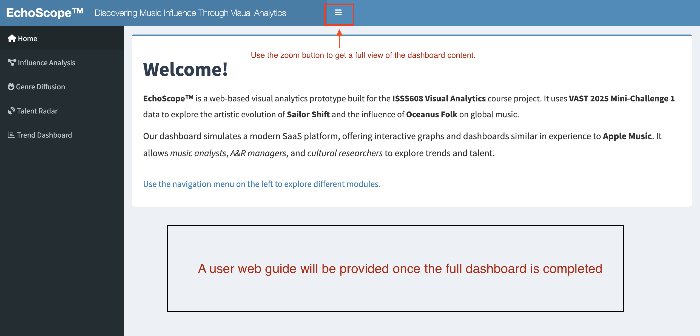
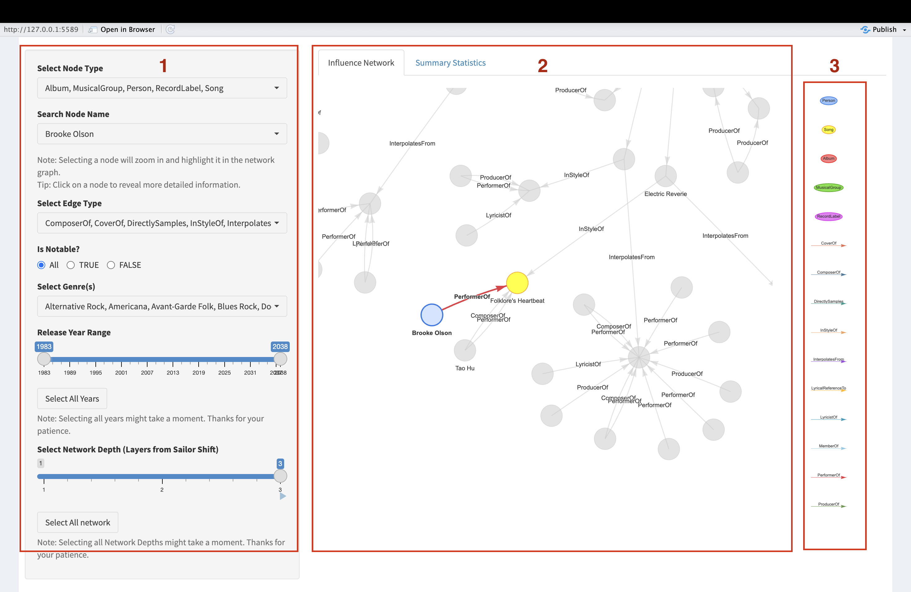
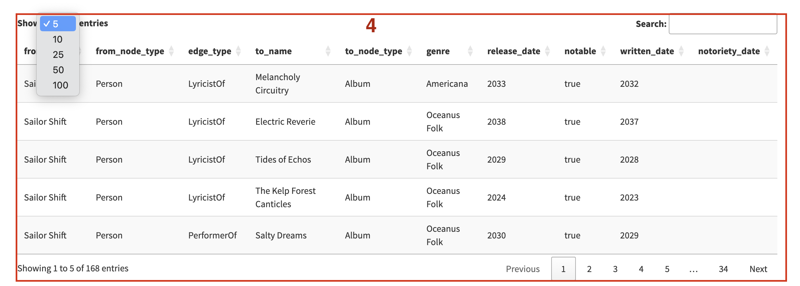

EchoScope™ is a visual analytics prototype designed to analyze artist influence, genre diffusion, and talent discovery through interactive dashboards and knowledge graph exploration.
üß≠ User Flow Overview
This section illustrates the main propose user interaction journey through the EchoScope™ platform.
Flow Structure:
1. Home – Introduction and orientation
2. Influence Analysis – Explore influence networks
3. Genre Diffusion – Track genre trends over time
4. Talent Radar – Compare and discover emerging talent
5. Trend Dashboard – Export macro-level insights
Welcome users and introduce the EchoScope™ platform.
UI Overview
Homepage with a welcome message and orientation notes.
üì∏ Screenshot of Home Page

Show code
tabItem(tabName ="home",fluidRow(box(width =12, status ="primary", solidHeader =FALSE,HTML('<h1>Welcome!</h1><p>EchoScope™ is a web-based visual analytics prototype...</p>') ) ))
1：We are going to use the tabset panel to focus on three key perspectives of influence analysis；
2 : Each section provides an overview introduction to the influence network from a specific perspective, helping users better understand the background and objectives of this dashboard.


The main dashboard will show into four parts InteractiveFilter Panel, Plot,Legend Panel,Interactive Data Table :
InteractiveFilter Panel :
Objective : To empower users to efficiently explore and narrow down the influence network of Sailor Shift by providing intuitive and responsive filtering options.
Filters edges by relationship type to limit visual noise and highlight key links.
Is Notable?
Radio buttons (All / TRUE / FALSE)
Filters nodes by whether they are tagged as “notable” to emphasize known artists.
Select Genre(s)
Multi-select (e.g., Alternative Rock, Avant-Garde Folk, etc.)
Enables genre-based filtering to tailor the view to specific music categories.
Release Year Range
Range slider (1983–2038) + “Select All Years” button
Restricts nodes by their associated release year, helping with temporal filtering.
Select Network Depth (from Sailor Shift)
Range slider (1–3) + “Select All network” button
Controls how many layers of influence (direct and indirect) are displayed.
Interaction Design Considerations
Responsiveness: Each filter is reactive and updates the network graph in real time.
Performance Notices: Informational messages are placed beneath heavier operations (e.g., select all years/network depth) to prepare the user for slight delays.
Enhanced UX: All dropdowns use searchable pickerInputs with “actions-box” for select/deselect all, streamlining multi-choice workflows.
2.Planned Visualization Panel: Influence Plot & Summary Statistics and the related legends
Objective
To dynamically visualize Sailor Shift’s influence network and provide quantitative summaries that respond in real-time to user-selected filters.And Influence plot, we plan to use the network plot to see the influence and for the Statistics, we will use the bar chart.
Network Plot & Summary plan
Tab
Content Type
Planned Interaction
Influence Network
Plan to usevisNetwork graph
Displays a dynamic node-link network showing direct and indirect influence.
Responds in real time to filters in the left panel (node type, genre, years, etc.).
Summary Statistics
Plan to use plotly interactive bar chart
Shows count of edges by relationship type (e.g., ComposerOf, PerformerOf, etc.).
Aggregated metrics update live as filters change.
Propose outcome of the plots:
For the legends, we will also add some interactions into the summary bar chart to find more information for the audience and in order to make more clearly to understand the network, the legends will also show the node types and the edge types for references.
To provide a tabular view of the filtered influence relationships, allowing users to explore details at a granular level, complementing the network graph.
server <-function(input, output, session) {#1 Dynamic Filtering of Edges and Nodes-filtered_edges() # Filter edges based on network depth and edge type-filtered_nodes() # Filter nodes based on valid IDs and input criteria-observe() # Dynamically update node_name picker choices#2 Network Graph Rendering and Interaction- output$directGraph # Render visNetwork main graph-observeEvent(input$node_name) # Focus and highlight on selected node-observeEvent(input$notable_filter) # Highlight nodes based on "Notable" filter#3 Quick Interaction Buttons-observeEvent(input$release_range_btn) # Reset release year slider to full range-observeEvent(input$network_depth_btn) # Set network depth to maximum (e.g., 3)#4 Data Table Output Section (DT::datatable)- output$directTable # Display filtered edge data with node names, types, genres, and dates#5 Summary Statistics Visualization Output- output$groupEdgeBarPlot # Render grouped bar chart (Node Type × Edge Type) using ggplotly- output$barInfo # Display tooltip text on bar click (plotly_click event)}
üìà Genre Diffusion Panel
Purpose Track the evolution of music genres across time using visual summaries.
Compare emerging artists based on graph features and scoring metrics to identify rising talent in a specific genre.
Key Features üéØ Filter by Genre Users can focus on a specific musical style to narrow the artist pool.
üéõ Customizable Score Weights Sliders allow users to adjust the importance of PageRank, Degree Centrality, Style Similarity, and Notable Works ‚Äî helping tailor the talent score to different discovery goals.
üìä Radar Comparison Chart Visually compare up to 5 artists across the 4 scoring dimensions using an interactive radar plot.
üìã Scoreboard Table A sortable, downloadable table summarizing talent scores and ranking details.
üì• Export Results Allows users to download the scoring results as a CSV for further analysis or reporting.
This section provides a consolidated reflection on the analytical visualisation development process, in accordance with the assignment requirements.
üîß Data Preparation Process
All data was sourced from the preprocessed knowledge graph file MC1_graph.json, which includes metadata on artists, albums, songs, relationships, and genre tags.
The following steps were taken to prepare the data for each module:
Node & edge extraction: Parsed using jsonlite::fromJSON(), then converted into tibbles.
Graph analysis: Centrality metrics such as PageRank and degree were computed using tidygraph.
Similarity calculation: Genre-based cosine similarity was computed between artists for the Talent Radar module.
Filtering and transformation: Date fields were converted using lubridate, and filters (e.g., by genre, year) were handled reactively in Shiny server logic.
üìä Selection of Data Visualisation Techniques
To ensure clarity, expressiveness, and interactivity, the following techniques and R packages were selected:
Module
Technique
Package(s) Used
Influence Graph
Interactive network graph
visNetwork
Genre Diffusion
Stacked area chart & heatmap
plotly, ggplot2
Talent Radar
Radar chart & data table
plotly, DT
Trend Dashboard
Layered area chart
plotly
These techniques were chosen for their ability to handle temporal, categorical, and relational data intuitively.
üé® Visual Design & Interactivity Principles
The dashboard was designed with the following visual and usability principles in mind:
Consistency: Unified layout using shinydashboard::tabItem, ensuring visual coherence.
User control: Users can dynamically filter data by genre, year, and depth, and adjust scoring weights via sliders.
Immediate feedback: Selections instantly update charts and tables to support exploratory analysis.
Exportability: Download buttons allow users to retrieve data insights for external use.
Best practices: Titles, legends, and axes were included where appropriate to enhance interpretability.
Overall, the application supports both high-level pattern recognition and detailed artist-level analysis in an accessible and interactive format.


 For the legends, we will also add some interactions into the summary bar chart to find more information for the audience and in order to make more clearly to understand the network, the legends will also show the node types and the edge types for references.
For the legends, we will also add some interactions into the summary bar chart to find more information for the audience and in order to make more clearly to understand the network, the legends will also show the node types and the edge types for references.